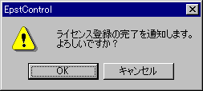

ライセンスキーを登録したのに期限が切れたと表示される １．入力されたライセンスキーを正しく入力していますか？

ライセンスキーを登録するには「ＯＫ」ボタンをクリックすることにより、登録の実行が行われます。このとき、80番ポートを使った通信が行われ、弊社認証サーバとの間で認証が行われます。万が一、ルータやファイヤーウォールなどの製品でポートを閉じていたり、外部との接続を一切許可しない環境では、通信ができないために、ライセンスキーの登録が正常に行えませんので、注意してください。「キャンセル」をクリックすると、ライセンスキー登録は行われません。２．正しく入力しているにもかかわらず、上記のメッセージが表示されない場合は、ライセンスキー登録部分で既に別のライセンスキーが登録済みである可能性があります。
(1) 下記のいずれかのファイルをダウンロードします。init-license.zip … Windows 2003 / Windows 2008 などの32bitOS用init-license(64).zip …Windows 2008 R2などの64bit版OS用（※この操作は、ライセンスキーを入力しても１の確認メッセージが表示されない場合のみに行ってください。）
その後、再度 Mail Controlを起動し、「バージョン情報」タブ画面から「ライセンスキー」を登録してください。３．80番ポートを使った通信は許可されていますか？ ライセンスキーを登録しようとしているマシンから、ブラウザを起動し、弊社のWebサイトは、ちゃんと閲覧できていますか？ （参考FAQ） ライセンスキーを入力すると「キーが無効です」と表示される